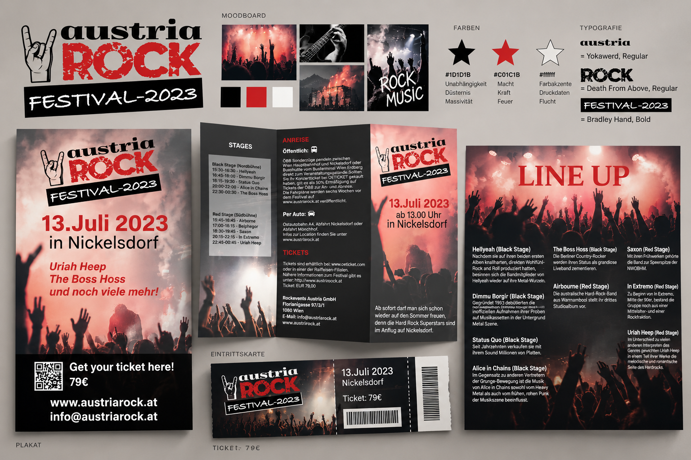

01Austria Rock Festival 2023
Für dieses Projekt wurde ein komplettes visuelles Erscheinungsbild für das fiktive „Austria Rock Festival 2023“ entwickelt. Der Schwerpunkt lag darauf,
eine einheitliche und aufmerksamkeitsstarke Gestaltung für ein Rock- und Metal-Festival zu schaffen und die einzelnen Medien zu einem zusammenhängenden Gesamtkonzept zu verbinden.
KONZEPT & PROJEKTPLANUNG
Zu Beginn wurde anhand eines Moodboards die visuelle Richtung des Festivals festgelegt. Dabei wurden Zielgruppe, Musikrichtung, Bildsprache, Farben und Typografie definiert.
Die Gestaltung richtet sich an ein junges Publikum und orientiert sich an den Bereichen Rock, Metal und Punk. Als zentrale Farben wurden Rot, Schwarz und Weiß gewählt.
Die Bildwelt mit Konzertfotografie, Bühnenlicht und Publikum vermittelt die Energie und Atmosphäre eines Festivals.
LOGO & CORPORATE DESIGN
Das entwickelte Austria-Rock-Logo bildet die Grundlage des gesamten Projekts. Die Kombination aus der Handgeste, der markanten Typografie und der auffälligen roten „ROCK“-Schrift
sorgt für einen charakteristischen und wiedererkennbaren Auftritt. Für die Gestaltung wurden außerdem passende Schriften, Farben und Bildelemente definiert, sodass über alle
Medien hinweg ein einheitliches Erscheinungsbild entsteht.
PRINTMEDIEN & KOMMUNIKATION
Auf Basis des Gestaltungskonzepts wurden verschiedene Werbe- und Informationsmedien umgesetzt. Dazu gehören ein Festival-Inserat, ein Veranstaltungsplakat sowie ein Wickelfalz-Flyer
mit Informationen zu Anreise, Tickets und Festivalprogramm. Zusätzlich entstand eine Line-up-Seite, auf der die auftretenden Bands und Künstler vorgestellt werden.
Besonderes Augenmerk lag auf der klaren Hierarchie der Informationen. Datum, Veranstaltungsort, Künstler und Ticketinformationen sollten schnell erfassbar sein, während die
großflächigen Konzertbilder für die passende Festivalstimmung sorgen.
GESAMTES PROJEKT
Das Projekt umfasst damit den vollständigen Gestaltungsprozess von der ersten Konzeption bis zur finalen Umsetzung: